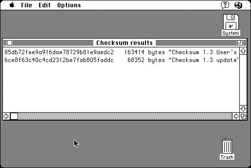

Download
checksum1.3.zip (287K) Checksum 1.3 repackaged into a zipped hfs disk image and checksum file. The disk image can be mounted with Mini vMac.
checksum1.3.sit.hqx (381K) Checksum 1.3 in the original format.
copyright: Geoff Walsh
mod date: Jan 6, 1996
license: shareware, free for personal use
For "calculating checksums for a file". Can compute MD5 and several other varieties of checksums. For System 6 or later. Can checksum both data and resource forks.

If you find these downloads useful, please consider helping the Gryphel Project, which hosts them.
Here are the md5 checksums for the downloads, signed with Gryphel Key 5:
--------- GRY SIGNED TEXT --------- 85201b56cd7ef1f09903f43889648517 checksum1.3.sit.hqx b3b66333f9583d5638aa5e13a4e943df checksum1.3.zip ------- BEGIN GRY SIGNATURE ------- Gry/4Xa8CFcUzxdN/K6QwjI4Tm2H7ct+bL9QCsrPHKNUi7xXhbehTaVyfUltFEP+ Dio3KF72Vob6KVYO5Tq/VNJqDmExiEkvUCtFTo0upqEnaGerLNwKS9AcaIesOfzR oDu0dotup8CuRouZprZBR4In8UGBAx1k/Zn4D3/3MqzmJJ9riNAYFHDJpGaTmaEN -------- END GRY SIGNATURE --------